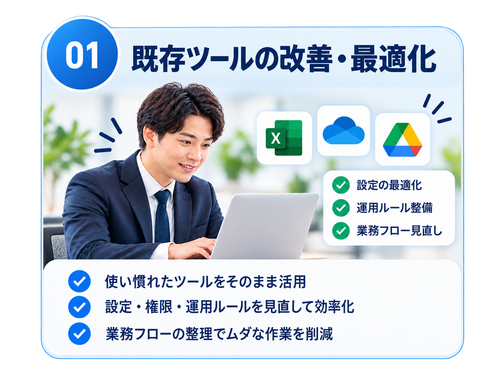
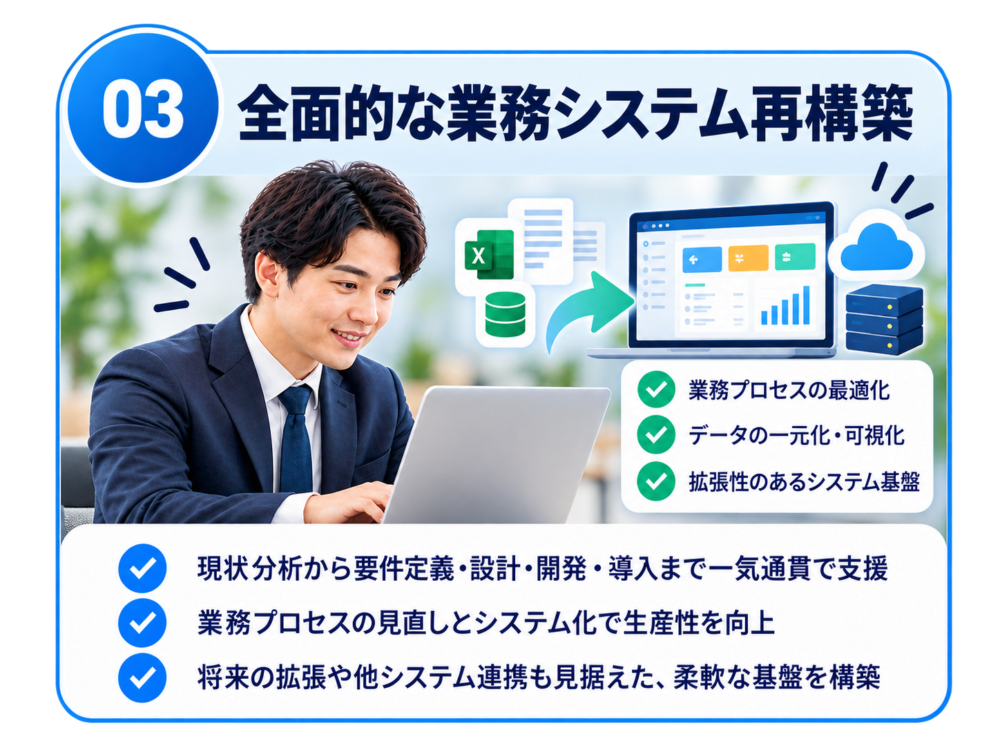
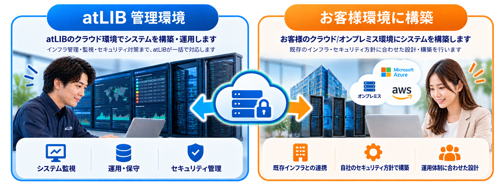
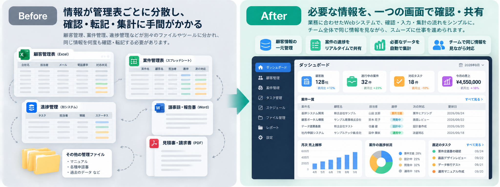

atLIB管理環境
インフラ管理まで任せたい企業向け
atLIBのクラウド環境にシステムを構築。契約範囲に応じて、インフラの管理・運用・保守まで対応します。
Excelやkintoneなどのローコード・ノーコードツールを、次のステージへ。
入力・転記・確認・承認・集計。電子化したはずなのに残っている仕事を、業務そのものから見直します。既存ツールの改善から自社専用Webシステムへの再構築まで、必要な方法をご提案します。
要件書は不要。現在の課題が整理できていない段階でもご相談いただけます。管理表をアプリに置き換えても、入力・確認・転記・集計の流れがそのままなら、業務負担は減りません。画面を行き来する手間や、使い方を覚える負担が増えていないか。まずは今の仕事の流れから見直します。
※画像は業務改善のイメージです。実際の機能・効果は個別要件によります。
業務に合わせて画面やデータのつながりを設計すれば、日々の作業を減らすだけでなく、部署や拠点が増えたときにも育てられる仕組みになります。ユーザー数に連動する利用料だけに頼らない費用構造も、選択肢として検討できます。
使い慣れたツールを活かす方法もあれば、必要な部分だけをWeb化する方法もあります。業務全体のつながりに課題がある場合は、仕事の流れから再設計する方法まで含めて比較します。


管理表だけでなく、仕事の流れそのものを再設計。
※最適な方法は現状・要件・ご予算を確認したうえでご提案します。
比較したいのは「今月いくら払っているか」だけではありません。利用人数の増加や追加機能による継続費用と、自社専用Webシステムの構築・運用費を、3〜5年の時間軸で比べます。
例：月額12万円なら年間144万円、3年間では432万円。実際の費用は契約内容により異なります。
対象業務を絞れば、現在の年間利用料程度を開発予算の一つの目安として検討できる場合があります。
Web化が適さない場合は、既存ツールの改善・最適化も含めてご提案します。
atLIBのクラウド環境で構築・運用する方法と、お客様のクラウド・オンプレミス環境に構築する方法があります。管理主体や費用、保守の委託範囲は、既存のIT環境と運用体制に合わせて個別に決めます。

atLIBのクラウド環境にシステムを構築。契約範囲に応じて、インフラの管理・運用・保守まで対応します。
お客様のクラウド／オンプレミス環境に構築。既存のインフラやセキュリティ方針、運用体制に合わせて設計します。
※提供方式・費用・責任範囲・契約終了時の引き継ぎ条件は個別に定めます。
顧客管理、案件管理、進捗管理、報告書などが別々のファイルや画面に分かれていると、確認・転記・集計の仕事は残ります。必要な情報を一つの業務画面につなぎ、使う人が迷わず確認・更新できる状態を目指します。

顧客管理、案件管理、進捗管理などを別々のファイルや画面で確認。同じ情報の転記や集計、必要な情報を探す作業が残ります。
業務に必要な情報をつなぎ、確認・入力・集計の流れをシンプルに。チームで同じ情報を見ながら仕事を進められる状態を目指します。
最初からシステム開発ありきではありません。現在の業務とツールを確認し、既存ツールの改善で足りるのか、部分的なWeb化がよいのか、業務全体を再設計すべきかを整理してから進めます。
管理表、利用ツール、作業手順、費用、担当者ごとの運用を確認し、どこに負担や重複があるかを整理します。
既存ツールの改善、部分Web化、全面再構築を比較し、必要な画面・機能・データの流れを設計します。
合意した範囲を開発し、データ移行や利用開始の準備まで支援。実際の業務で使える状態へつなげます。
稼働後も、契約した支援範囲に応じて保守・監視・追加改修に対応し、会社の変化に合わせて育てます。
実際の業務で使われ、仕事が減り、会社の成長に合わせて改善できる仕組みへ。業務整理から開発後の運用まで、必要な範囲を一緒に設計します。
はい。現在のアプリ構成や業務フローを確認し、既存ツールの改善、部分的なWebシステム化、全面再構築から、お客様に合った方法をご提案します。必ずしも既存ツールからの移行を前提とするものではありません。
対象業務・機能・データ移行の範囲によります。年間利用料を予算の目安に、実現可能な範囲を検討します。
はい。atLIB管理環境またはお客様管理環境を選択肢として、責任範囲と費用を個別に設計します。
現在のツール名・利用人数・おおよその月額費用が分かれば十分です。要件書は不要です。
※レビュー版：申込フォーム・診断ロジック・API連携は未実装です。まずは自社の状況を整理したい方
現在のツール・業務・コストなどを確認し、Webシステム化を検討する余地があるか整理します。
無料診断を受ける → 診断後、必要に応じて結果をもとに無料相談へ進めます。具体的に相談したい方
現在のお悩みや実現したいことを伺い、改善方法や進め方について担当者と直接相談できます。
無料相談を申し込む →※レビュー版：無料診断・無料相談の受付機能、診断ロジック、API連携は未実装です。
✓ 無料診断：まず現状を整理したい
✓ 無料相談：担当者と直接話したい
✓ 診断後に無料相談へ進むことも可能
✓ 要件書がなくても相談可能